Assignment1-5: Compressive Video Acquisition using coded snapshot
- Rollno: 163059009, 16305R011
Contents
- Init
- 1. Part(a) Fetch T=3 frames
- 2. Creating Random Code Matrix
- 2.1 Creating Coded Snapshot
- 2.2 Showing the "Coded snapshot"
- 3. Part(c): Equation in the form 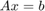
- 4. Part(d & e): Reconstruction
- 4.1 Showing o/p
- 5. Video Acquisition and Reconstuction for # of Frames 5
- 6. Video Acquisition and Reconstuction for # of Frames 7
Init
adding path for MMREAD
addpath('../MMread'); file='../input/cars.avi'; video=mmread(file,1:10,[],false,true); H=120;W=240;
1. Part(a) Fetch T=3 frames
T=3; %no.of frames
frame=fetchFrames(video,T,H,W) ;
2. Creating Random Code Matrix
C=generateCodeMtx(H,W,T);
2.1 Creating Coded Snapshot
noiseStd=2.0; E=generateCodedSnapshot(frame,C,noiseStd);
2.2 Showing the "Coded snapshot"
figure('name','Coded snapshot with noise'); imshow(E/max(E(:))); title('\fontsize{10}{\color{magenta}Coded snapshot with noise for T=3}'); axis tight,axis on;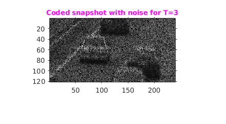
3. Part(c): Equation in the form
C(t): Code for the 't' frame where 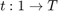
E: Coded Snapshot
Objective: Estimate 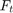 of original video where
We can write our coded Snapshot equation as Ax=b
Here, 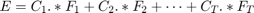
We can write 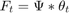
Let 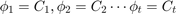
Therefore, 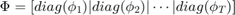
We get 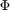 dimension as NxNT where N is the no. of pixel
Let = Col Vector of Pixels, then
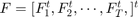
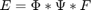 ,
where can be 3D-DCT of NTxNT or Block diagonal of 2D-DCT per frame
In our we are taking, as Block diagonal of 2D-DCT per frame but for 8x8 patches
Therefore here, b = E, x = F and A = 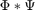
4. Part(d & e): Reconstruction
Part(d)
As in above mentioned i.e 'section 3' the dimentsion of A,b,x are very large to compute in one go in limited harware system. So to solve this problem we will do patchwise i.e by taking 8x8 overlapping patching.
Let P be the some patch of dim 8x8 cornered at top-left at point (x1,y1)
Let = Col. vector of pixels for P, so the dimension of is 64x1
having dimension 64Tx1
Let 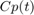: Code for patch, cornered at top-left at point (x1,y1) for the 't' frame where
So the dimension of 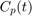 is 8x8
Let 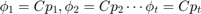
Therefore,
We get dimension as 64x64T where 64 is the no. of pixel in the patch
Each 8x8 patch is sparse in 2D-DCT. So we create 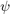 as 2d dct of 64x64
Therefore, = Block diagonal of 2D-DCT per frame, dimension 64Tx64T
So, A=
Let b is vectorised form the patch taken from the Coded Snapshot (E) cornered at top-left point (x1,y1)
Therefore, we have solve , where x= F
tic patchSize=8;ompEpsilon=6; [outputImg]=reconstruct(E,T,C,patchSize,ompEpsilon); toc
Elapsed time is 170.463639 seconds.
4.1 Showing o/p
for i=1:T figure('name','Result T=3'); % Original subplot(1,2,1); imshow(frame(:,:,i),[]); label= sprintf('\\fontsize{10}{\\color{red} Orginal T=3: Frame %d}',i); title(label); % Reconstruction subplot(1,2,2); imshow(outputImg(:,:,i),[]); label= sprintf('\\fontsize{10}{\\color{magenta} Reconst. T=3: Frame %d}',i); title(label); end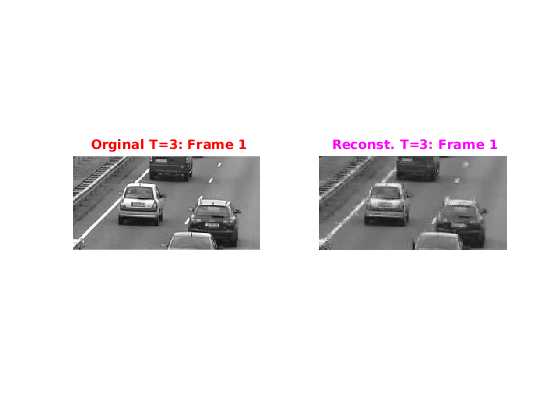 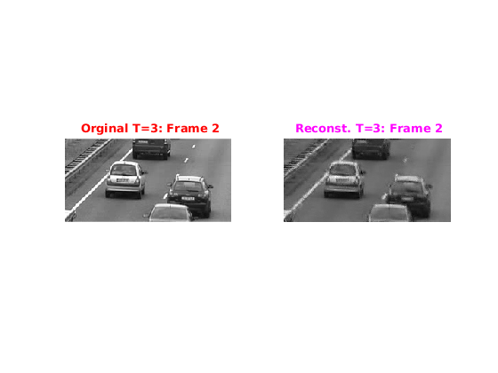 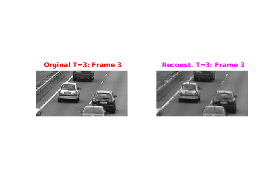
5. Video Acquisition and Reconstuction for # of Frames 5
T=5; %no.of frames frame=fetchFrames(video,T,H,W) ; C=generateCodeMtx(H,W,T); noiseStd=2.0; % Create Coded Snapshot E=generateCodedSnapshot(frame,C,noiseStd); figure('name','Coded snapshot with noise'); imshow(E/max(E(:))); title('\fontsize{10}{\color{magenta}Coded snapshot with noise for T=5}'); axis tight,axis on; % Reconstruction using C.S tic patchSize=8;ompEpsilon=6; [outputImg]=reconstruct(E,T,C,patchSize,ompEpsilon); toc % Showing o/p for i=1:T figure('name','Result T=5'); % Original subplot(1,2,1); imshow(frame(:,:,i),[]); label= sprintf('\\fontsize{10}{\\color{red} Orginal T=5: Frame %d}',i); title(label); % Reconstruction subplot(1,2,2); imshow(outputImg(:,:,i),[]); label= sprintf('\\fontsize{10}{\\color{magenta} Reconst. T=5: Frame %d}',i); title(label); end
Elapsed time is 223.547259 seconds.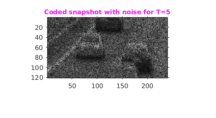 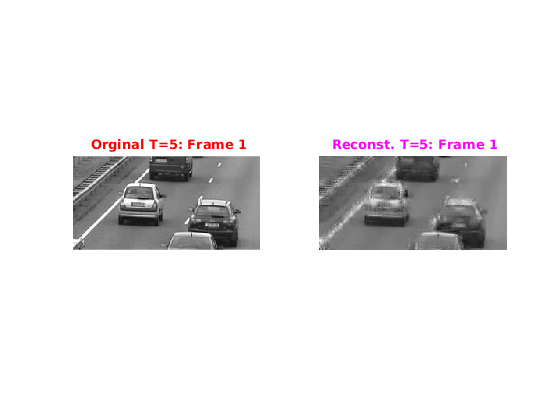 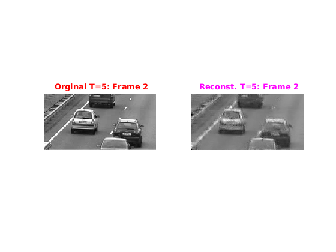 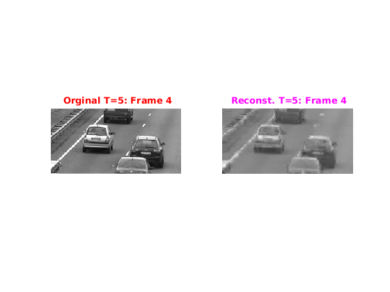
6. Video Acquisition and Reconstuction for # of Frames 7
T=7; %no.of frames frame=fetchFrames(video,T,H,W) ; C=generateCodeMtx(H,W,T); noiseStd=2.0; % Create Coded Snapshot E=generateCodedSnapshot(frame,C,noiseStd); figure('name','Coded snapshot with noise'); imshow(E/max(E(:))); title('\fontsize{10}{\color{magenta}Coded snapshot with noise for T=7}'); axis tight,axis on; % Reconstruction using C.S tic patchSize=8;ompEpsilon=6; [outputImg]=reconstruct(E,T,C,patchSize,ompEpsilon); toc % Showing o/p for i=1:T figure('name','Result T=5'); % Original subplot(1,2,1); imshow(frame(:,:,i),[]); label= sprintf('\\fontsize{10}{\\color{red} Orginal T=7: Frame %d}',i); title(label); % Reconstruction subplot(1,2,2); imshow(outputImg(:,:,i),[]); label= sprintf('\\fontsize{10}{\\color{magenta} Reconst. T=7: Frame %d}',i); title(label); end
Elapsed time is 292.520851 seconds.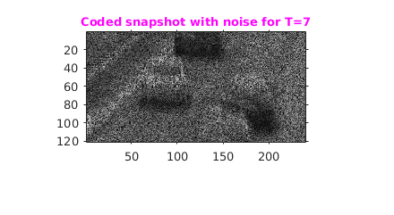 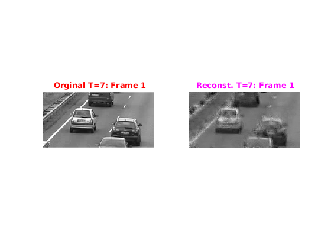 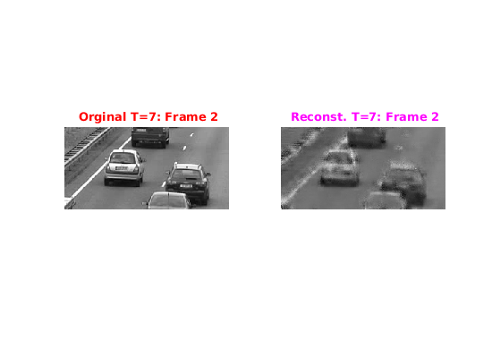 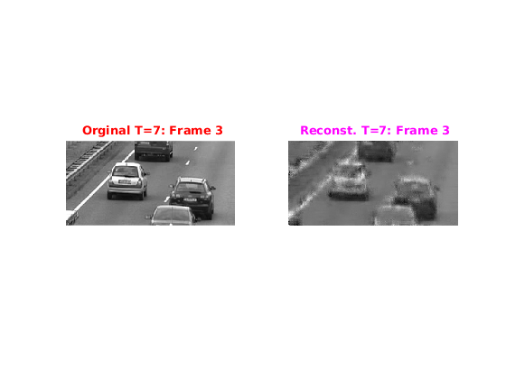 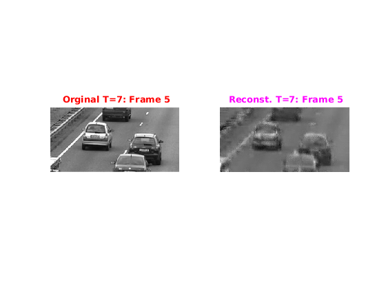 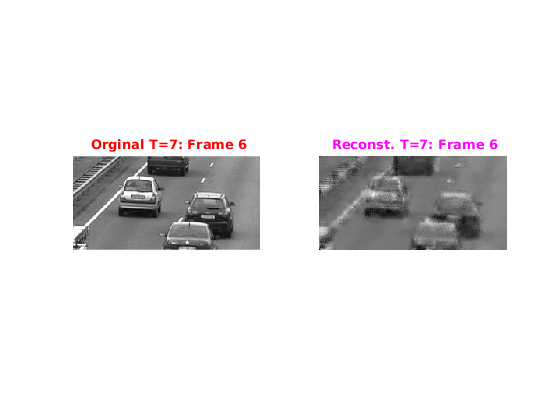 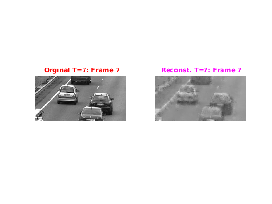